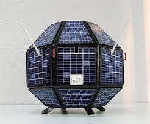
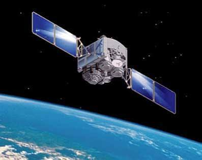
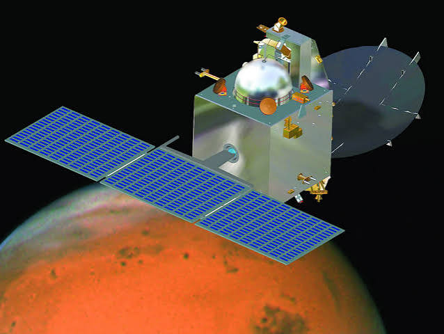
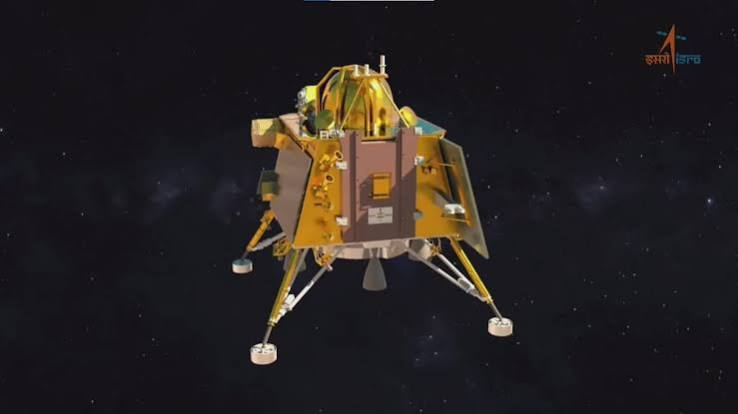
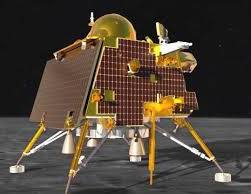
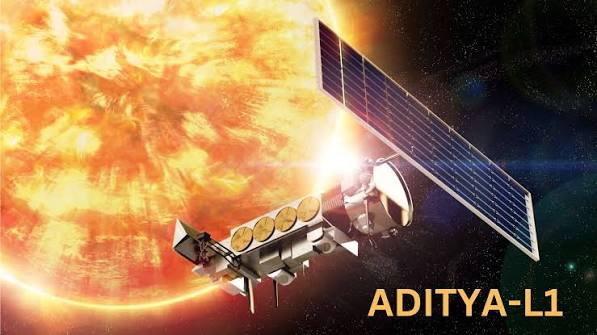
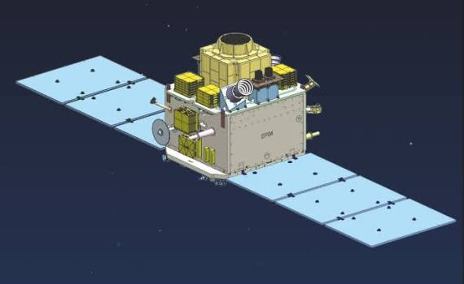
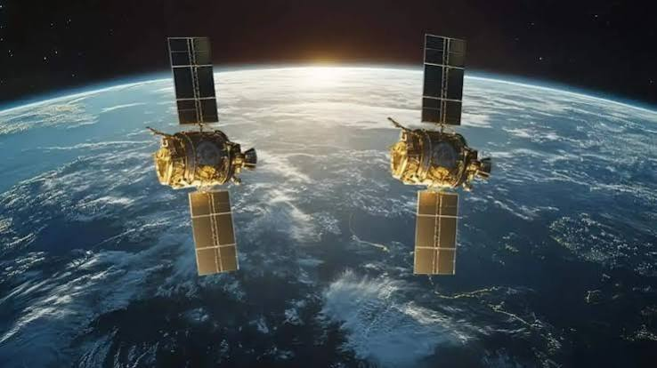

Welcome to India's Space Journey!The Indian Space Research Organisation (ISRO) is India's national space agency. It develops satellites, launch vehicles and scientific missions to explore space and benefit people on Earth. From launching India's first satellite, Aryabhata, to landing Chandrayaan-3 on the Moon, India's space programme shows the power of science, teamwork and determination. |
Explore some important missions, their destinations and their achievements.
| No. | Mission Name | Picture | Launch Year | Destination | Main Objective | Achievement / Special Feature |
|---|---|---|---|---|---|---|
| 1 | Aryabhata |
 |
1975 | Earth orbit | Conduct scientific experiments. | India's first satellite, named after an ancient Indian mathematician. |
| 2 | Chandrayaan-1 |
 |
2008 | Moon | Study the Moon's surface and minerals. | Helped provide evidence of water molecules on the Moon. |
| 3 | Mangalyaan (Mars Orbiter Mission) |
 |
2013 | Mars | Study the Martian surface and atmosphere. | India reached Mars orbit on its first attempt in 2014. |
| 4 | Chandrayaan-2 |
 |
2019 | Moon | Study lunar topography, minerals and exosphere. | Its orbiter continues to support lunar science observations. |
| 5 | Chandrayaan-3 |
 |
2023 | Moon | Demonstrate a safe landing and rover operations. | Successfully landed near the Moon's south polar region on 23 August 2023. |
| 6 | Aditya-L1 |
 |
2023 | Sun-Earth L1 region | Study the Sun and its outer atmosphere. | India's first space-based solar observatory. |
| 7 | XPoSat |
 |
2024 | Earth orbit | Study X-ray polarisation from cosmic sources. | India's dedicated X-ray polarimetry mission. |
| 8 | SpaDeX |
 |
2024 | Earth orbit | Demonstrate docking technology in space. | Successfully demonstrated docking in January 2025, an important step for future missions. |
| No. | Achievement | Why It Matters |
|---|---|---|
| 1 | First Indian satellite — Aryabhata | Started India's satellite journey. |
| 2 | Mars Orbiter Mission | Showed India's growing deep-space capability. |
| 3 | Chandrayaan-3 | Demonstrated a successful lunar landing and rover operations. |
| 4 | Aditya-L1 | Expands India's ability to study the Sun from space. |